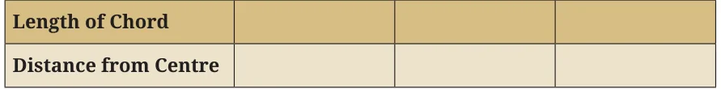
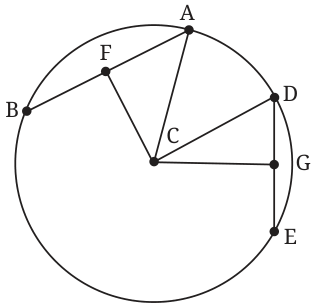

You have two chords on a circle. One is longer than the other. Which chord is closer to the centre? Can you guess? Activity: Draw a circle. Draw chords of various lengths. Drop a perpendicular to each chord from the centre. Record the length of the chord and its distance from the centre in a table.

What do you observe? The longer the chord, the closer it is to the centre. Let us try to understand why this is true. Theorem 8: Let AB and DE be two chords of a circle with centre C. Suppose \(AB > DE\). Then the distance from C to AB is less than the distance from C to DE. As always, we draw the figure. Remember: by ‘distance from C to AB’ we mean the perpendicular distance. So, we drop perpendiculars CF and CG from C to AB and DE, respectively.

Given: \(AB > DE\). To show that: \(CF < CG\). Why is this true? In Fig. 5.16, both AC and CD are radii. So, \(AC = CD\). By the Baudha¯yana - Pythagoras Theorem,
\(CD = CG + GD\) and \(AC = CF + AF\) .
So, \(CF + AF = CG + GD\) . Now AB is greater than DE. So AF is greater than GD (because F and G are Fig. 5.16 the midpoints of AB and DE).
Since \(AF > GD\) we have \(CF < CG\) . So, \(CF < CG\).
Comment: The chord nearest to the centre is the chord containing the centre. Its distance to C is zero! So the diameter is the greatest chord. If one pushes the chord away from the centre, at some stage the chord becomes a single point, its length is zero, and the distance of C from this chord is the radius.

- 1.Find the length of the chord of a circle where the radius is 7 cm
and perpendicular distance is 6 cm.
- 2.Explain why the following statement is true: If the perpendicular
distance of a chord from the centre is d and the radius is r, then the chord length is \(2 r^{2} - d^{2}\) .